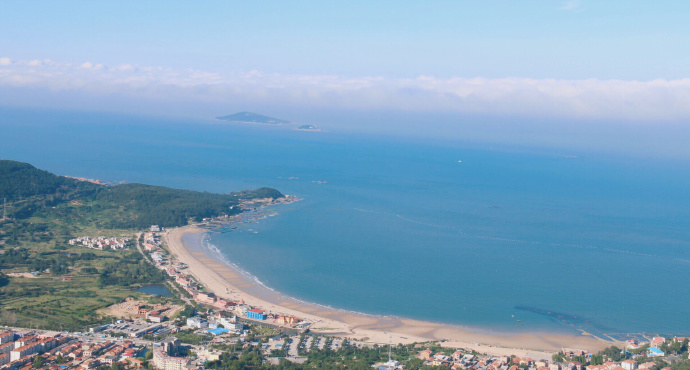
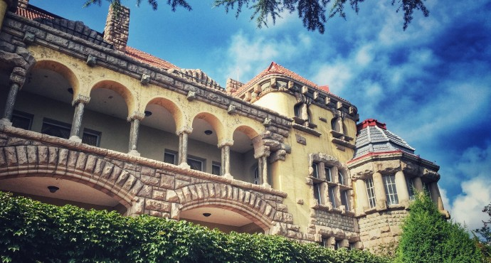
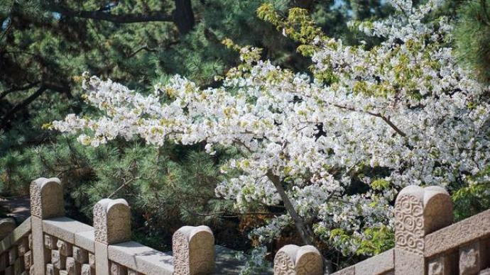

青岛崂山风景区
每年的三月下旬，樱桃花开满崂山，目及之处，皆是花海。 位于青岛东部，有“海上第一名山”的美称，最高峰为海拔1133米左右的巨峰，以雄伟、壮观、奇特、秀丽成为著名的道教名山。

每年的三月下旬，樱桃花开满崂山，目及之处，皆是花海。 位于青岛东部，有“海上第一名山”的美称，最高峰为海拔1133米左右的巨峰，以雄伟、壮观、奇特、秀丽成为著名的道教名山。

德国总督楼旧址始建于1905年，落成于1907年，由德国著名建筑师拉查鲁维茨设计。 作为“德国建筑艺术在中国”的最高代表，其装饰之豪华、造型之典雅，至今仍雄居我国单体建筑之首列。 这里先后接待过众多海内外知名人士，架起了中外文化关系沟通之桥梁，是青岛历史文化名城的一个经典象征。

鲁迅公园是青岛市内一处免费开放的临海公园，海边有大片的红褐色礁石。 公园沿狭长基岩海岸东西伸展，东临青岛水族馆和第一海水浴场，全长连绵约2公里。 公园内红礁、碧水、青松、幽径、亭榭逶迤多姿，景色迷人，是一处兼有园林美和自然美的风景区。

八大关是指以长城八个关口命名的八条马路（现已增为十条），因关内集中了俄、英、法、德、麦等20多个国家建筑风格的别墅，有“万国建筑博览会”之称。 关内花石楼和公主楼最为有名，建筑风格独特，需要收取门票，是来此必打卡地。

青岛最早的军事专用人工码头，是青岛标志性建筑和著名风景游览点。 南端防波堤内部的八角楼被称为“回澜阁”。伫足于此，可以欣赏到青岛十景之一的“飞阁回澜”。

青岛海昌极地海洋公园于2006年开幕，位于中国东部国际知名的旅游景区——风光如画的青岛石老人国家旅游度假区。 青岛海昌极地海洋公园由极地海洋馆、欢乐剧场、5D动感体验馆、深海奇幻馆组成，并拥有可同时容纳3,600人的室内海洋动物表演场，和一条六米宽的海底隧道，以及可让游客参与互动的白鲸、海狮、海豹展示池，使游客能够感受到特别的极地海洋文化体验。

因“五四运动”而得名，是青岛最具标志性的中心广场。 背倚市政府大楼，南临浮山湾，南北纵长700米，是一处集草坪、喷泉、雕塑于一体的现代化风格的广场。